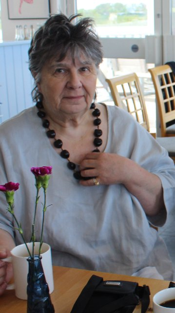
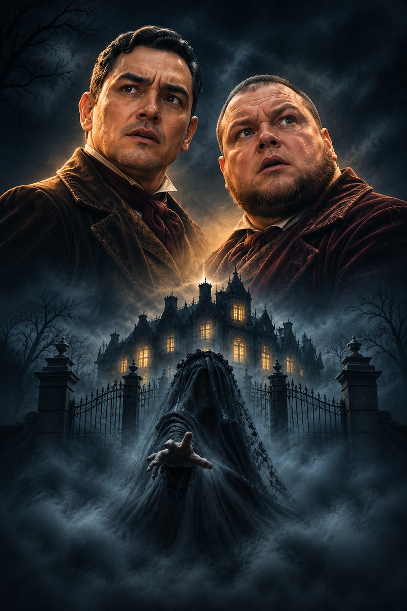
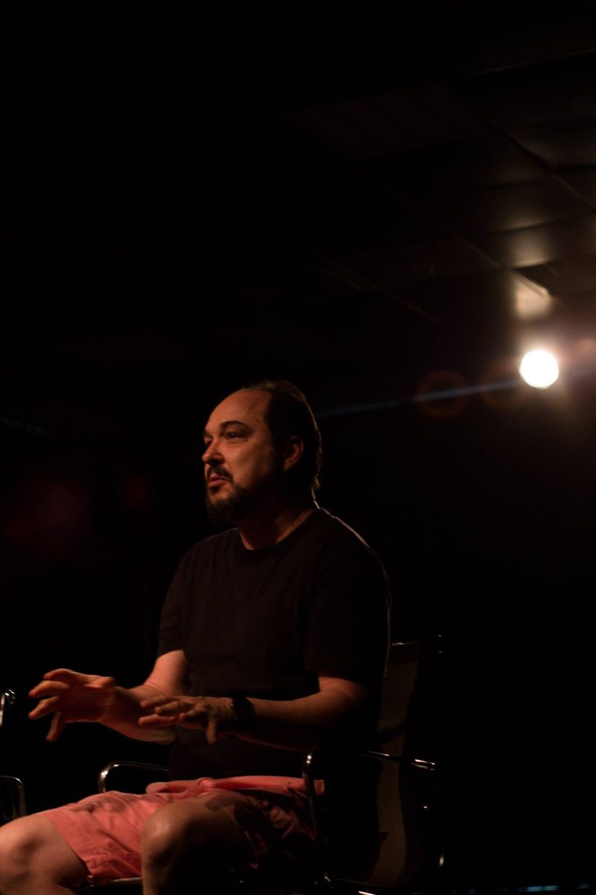

Há histórias que não terminam quando são contadas.
Algumas permanecem. No silêncio, nas lembranças e naquilo que preferimos não recordar.
Sinopse
Há segredos que o tempo não consegue sepultar.
Arthur Kipps, um advogado marcado por acontecimentos do passado, decide contar uma experiência que jamais conseguiu esquecer.
Anos antes, durante uma viagem de trabalho a uma região isolada da Inglaterra, ele foi encarregado de cuidar dos assuntos de uma cliente falecida. Seu destino era Eel Marsh House, uma antiga propriedade cercada por pântanos, silêncio e uma atmosfera inquietante.
Ali, acontecimentos inexplicáveis e a presença de uma misteriosa mulher vestida de preto transformariam sua vida para sempre.
Entre lembranças, aparições e segredos, A Mulher de Preto conduz o público por uma história em que o medo nasce não apenas daquilo que se vê, mas, sobretudo, daquilo que a imaginação é capaz de criar.
Compartilhe com quem você acha que vai gostar
Compartilhar no WhatsAppUma história que atravessou fronteiras
Publicada em 1983, a obra The Woman in Black, da escritora britânica Susan Hill, tornou-se uma das mais conhecidas histórias contemporâneas de fantasmas da literatura inglesa.
Em 1987, o dramaturgo Stephen Mallatratt transformou o romance em uma peça teatral que encontrou na simplicidade dos recursos cênicos e na força da imaginação uma maneira singular de construir o suspense.
Em 1989, a peça chegou ao West End londrino, onde permaneceu em cartaz por 33 anos, consolidando-se como um dos grandes sucessos do teatro britânico.
A obra ultrapassou as fronteiras da Inglaterra, ganhou traduções para pelo menos 12 idiomas e foi apresentada em 41 países.
Agora, esse clássico chega aos palcos mineiros em uma montagem brasileira com direção e versão de Sérgio Abritta, realizada pela Foco 6 Produções.
- 1983Publicação do romance de Susan Hill.
- 1987Adaptação teatral de Stephen Mallatratt.
- 1989Estreia no West End de Londres.
- 2023Encerramento da temporada histórica no West End.
- 2026Montagem mineira da Foco 6 Produções.

Susan Hill
Escritora britânica, Susan Hill estudou em Scarborough e Coventry e frequentou o King's College London, instituição da qual é membro honorário.
Sua produção literária reúne romances, contos, histórias de fantasmas, livros infantis, obras autobiográficas e narrativas policiais.
Entre seus trabalhos estão I'm the King of the Castle, vencedor do Somerset Maugham Prize; The Bird of Night, premiado com o Whitbread Award; e The Albatross, vencedor do John Llewellyn Rhys Prize.
Na literatura de suspense e sobrenatural, destacam-se The Woman in Black, The Mist in the Mirror, The Small Hand e Dolly.
Susan Hill também é autora da série policial protagonizada pelo detetive Simon Serrailler e de obras autobiográficas como The Magic Apple Tree e Howards End is on the Landing: A Year of Reading from Home.
Em 2012, recebeu a distinção de Comendadora da Ordem do Império Britânico (CBE), em reconhecimento aos serviços prestados à literatura.
Stephen Mallatratt
Ator e dramaturgo britânico, Stephen Mallatratt começou a escrever suas primeiras peças enquanto trabalhava na companhia teatral de Alan Ayckbourn, em Scarborough, na Inglaterra.
Várias de suas obras foram produzidas e dirigidas por Ayckbourn, abrindo caminho para encomendas de outros teatros.
Sua peça Comic Cuts, escrita para o Contact Theatre, em Manchester, recebeu o Thames TV Theatre Writers Award e foi posteriormente apresentada no West End com o título The Glory of the Garden.
Além de suas obras originais, Mallatratt dedicou-se à adaptação de clássicos literários para o teatro e a televisão, incluindo The Turn of the Screw, de Henry James, e Rebecca, de Daphne du Maurier.
Na televisão, participou de produções como The Innocent, Coronation Street e The Forsyte Saga.
Seu trabalho mais conhecido é a adaptação teatral de The Woman in Black, de Susan Hill, que permaneceu em cartaz durante 33 anos no West End e conquistou plateias em diferentes países.
O teatro como parte do mistério
Em A Mulher de Preto, o próprio teatro se transforma em parte essencial da narrativa.
A história se desenvolve a partir do encontro entre Arthur Kipps, um homem atormentado por lembranças do passado, e um ator contratado para ajudá-lo a transformar sua experiência em uma apresentação.
À medida que a história é reconstruída, as fronteiras entre passado e presente, memória e representação tornam-se cada vez mais tênues.
Com dois atores conduzindo a narrativa, a peça explora um dos recursos mais poderosos do teatro: a capacidade de fazer o espectador enxergar, sentir e imaginar muito além daquilo que está diante de seus olhos.

Luiz Henrique Moura
Luiz Henrique Moura é ator mineiro, natural de Arcos (MG). Iniciou sua trajetória no teatro aos 15 anos e, aos 21, mudou-se para Belo Horizonte, onde deu continuidade à sua carreira artística. São 26 anos de trajetória dedicados aos palcos.
Como ator, integrou elencos de espetáculos como O Marido da Minha Mulher, de Sérgio Abritta; Greta Garbo, Quem Diria, Acabou no Irajá, de Fernando Mello; Mogli – O Menino Lobo; e A Maior Flor do Mundo, de José Saramago, além de clássicos do teatro infantil como Pluft, o Fantasminha, Maria Minhoca e A Bruxinha que Era Boa. Ao lado do Reticências Produções Artísticas, participou de várias montagens teatrais.
Entre seus trabalhos mais recentes estão Velório à Brasileira, de Aziz Bajur; Divas no Divã, de Cris Linnares; e O Dia em que Alfredo Virou a Mão, de João Bethencourt.
Além da atuação, desenvolve trabalhos como diretor e produtor na capital mineira e está à frente da Foco 6 Produções.
Em A Mulher de Preto, integra o elenco da primeira montagem mineira do clássico teatral baseado no romance de Susan Hill, com direção e versão brasileira de Sérgio Abritta.
Bruno de Moura
Bruno de Moura é ator mineiro com 21 anos de trajetória dedicada ao teatro. Ao longo de mais de duas décadas nos palcos, construiu uma carreira marcada pelo encontro com diferentes personagens, gêneros e dramaturgias.
Como ator, integrou elencos de espetáculos como O Marido da Minha Mulher, de Sérgio Abritta; Velório à Brasileira, de Aziz Bajur; Divas no Divã, de Cris Linnares; e O Dia em que Alfredo Virou a Mão, de João Bethencourt, entre outras montagens que integram sua trajetória artística.
Parte importante dessa caminhada foi construída ao lado de seu primo, Luiz Henrique Moura, com quem compartilhou diferentes produções e palcos ao longo dos anos.
Com uma trajetória especialmente ligada à comédia, em A Mulher de Preto os dois se encontram novamente em cena, agora explorando o suspense e uma nova linguagem cênica, na primeira montagem mineira do clássico teatral baseado no romance de Susan Hill, com direção e versão brasileira de Sérgio Abritta.

Sérgio Abritta
Sérgio Abritta é dramaturgo, diretor e pesquisador teatral, com quase quatro décadas de trajetória profissional dedicada às artes cênicas.
Estreou profissionalmente como dramaturgo em 1987, com Até que a Morte nos Separe, obra vencedora do Prêmio Cidade de Belo Horizonte de Dramaturgia. Desde então, construiu uma extensa produção autoral, com dezenas de textos publicados e encenados por diferentes companhias.
Entre suas obras estão Wilde.Re/Construído, 1/4 de Amor, Eu Te Amo, Ditadura, Um Estranho que Me Quer, Aniversário de Casamento, O Marido da Minha Mulher e Meninonina, entre outras.
Ao longo de sua carreira, recebeu importantes reconhecimentos, incluindo duas premiações do Prêmio Cidade de Belo Horizonte de Dramaturgia, duas do Prêmio Álvaro de Carvalho e quatro do Prêmio SESC/SATED de Melhor Texto.
Como diretor, trabalhou com dramaturgias brasileiras e internacionais, incluindo Arte e Deus da Carnificina, de Yasmina Reza; Pequeñas Infidelidades, de Mario Diament, cuja tradução também assina; e O Submarino, de Miguel Falabella e Maria Carmem Barbosa.
É mestre e doutorando em Estudos Literários pela Faculdade de Letras da UFMG.
Em A Mulher de Preto, assina a direção e a versão brasileira do espetáculo, conduzindo a primeira encenação mineira do clássico teatral de Stephen Mallatratt, baseado no romance de Susan Hill.
A atmosfera do espetáculo
No teatro, o medo nem sempre precisa ser mostrado. Às vezes, ele nasce de um silêncio prolongado, de uma sombra que parece se mover ou de um som cuja origem desconhecemos.
Em A Mulher de Preto, a imaginação do espectador ocupa um lugar fundamental na construção do suspense.
Na concepção desta montagem, cenografia, iluminação, sonoplastia e projeções se articulam para criar uma experiência sensorial. Os ambientes se transformam, as sombras sugerem presenças e os sons ajudam a construir a tensão da narrativa.
Mais do que reproduzir lugares, esses recursos procuram despertar sensações, conduzindo o público por um universo em que realidade, memória e imaginação se confundem.
Curiosidades sobre A Mulher de Preto
O livro veio primeiro.
A Mulher de Preto nasceu como romance de Susan Hill, publicado em 1983, antes de conquistar os palcos.
33 anos no West End.
A adaptação teatral de Stephen Mallatratt permaneceu em cartaz no tradicional distrito teatral de Londres durante 33 anos.
Uma história que fala muitas línguas.
A peça foi traduzida para pelo menos 12 idiomas e apresentada em 41 países, segundo os dados fornecidos pelos representantes da obra.
O teatro dentro do teatro.
A adaptação teatral utiliza o próprio ato de representar como parte da narrativa, fazendo da imaginação do público uma aliada do suspense.
Uma obra, diferentes linguagens.
O romance de Susan Hill ganhou versões para o teatro e para o cinema, alcançando públicos de diferentes gerações.
Compartilhe com quem você acha que vai gostar
Compartilhar no WhatsAppFicha técnica
A Mulher de Preto — The Woman in Black
- Obra original
- Susan Hill
- Adaptação teatral
- Stephen Mallatratt
- Direção e versão brasileira
- Sérgio Abritta
- Elenco
- Luiz Henrique Moura
Bruno de Moura - Identidade visual
- Márcio Miranda
Samuel Figueiredo - Produção
- Foco 6 Produções
The Woman in Black
Adaptada por Stephen Mallatratt a partir do romance de Susan Hill.
Licenciamento
Esta produção foi licenciada mediante acordo com The Agency (London) Ltd., 24 Pottery Lane, London W11 4LZ – e-mail: info@theagency.co.uk.
Algumas histórias permanecem conosco muito depois que as luzes se apagam.
Quinta a sábado, 20h · Domingo, 19h